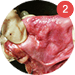
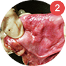

ντροπιαστικών ιατρικών διαδικασιών
28.573 άντρες
από ειδικούς
ελεγμένη
επαγγελματική θεραπεία για προστατίτιδα
Φυσικό προϊόν που προστατεύει
και εξαλείφει το αδένωμα,
την χρόνια
και οξεία προστατίτιδα,
Η προστατίτιδα είναι μια ασθένεια
που μπορεί να
υπάρχει για πολλά χρόνια
χωρίς να το γνωρίζετε καν, ενώ αναπτύσσεται, καταστρέφει την υγεία σας, προκαλεί στυτική δυσλειτουργία, μπορεί ακόμη και να απειλήσει την ζωή σας.
Σύμφωνα με επίσημα στατιστικά
στοιχεία, ένας στους δύο άντρες άνω
των 30 πάσχει από χρόνια
προστατίτιδα.
Γεγονός:
Πραγματικοί αριθμοί, σύμφωνα με τους ειδικούς:
85% των αντρών άνω των 20 υποφέρει από χρόνια
προστατίτιδα.
Προσοχή!
Η χρόνια προστατίτιδα συχνά δεν παρουσιάζει κανένα σύμπτωμα.
Τα βασικά συμπτώματα της προστατίτιδας είναι
αίσθηση καψίματος και πόνος
κατά τη διάρκεια
της ούρησης,
αίσθηση ελλιπούς
ούρησης,
άμεση ανάγκη
ούρησης,
συχνή ούρηση κατά τη διάρκεια της νύχτας
(περισσότερο από μια φορά),
απώλεια ούρων
μετά την ούρηση.
Άλλα συμπτώματα της προστατίτιδας:
- Πόνος στην ουρήθρα
και στην κάτω κοιλιακή χώρα, - απώλεια σεξουαλικής
επιθυμίας, - αδύναμες και αργές στύσεις,
- πόνος κατά τη διάρκεια της σεξουαλικής πράξης,
- πρόωρη εκσπερμάτωση,
- υψηλή θερμοκρασία
(μέχρι 39-40℃).
Κάντε ένα γρήγορο και απλό τεστ για να δείτε την
κατάσταση
του προστάτη σας.
Ερωτηματολόγιο για την αξιολόγηση της σοβαρότητας των συμπτωμάτων
σε άνδρες με χρόνια προστατίτιδα.
Δείκτης Συμπτωμάτων του Εθνικού Ινστιτούτου Υγείας για τη
Χρόνια Προστατίτιδα (NIH-CPSI)
- 1
- 2
- 3
- 4
Την τελευταία εβδομάδα, νιώσατε πόνο ή δυσφορία στις ακόλουθες περιοχές;
Περιοχή μεταξύ ορθού και όρχεων (περίνεο)
Όρχεις
Άκρη του πέους (που δεν σχετίζεται με την ούρηση)
Κάτω από τη μέση σας, στην περιοχή της ήβης ή της ουροδόχου κύστης
Πόσο συχνά νιώσατε πόνο ή δυσφορία σε κάποια από αυτές τις περιοχές την περασμένη εβδομάδα;
Πόσο συχνά χρειάστηκε να ουρήσετε ξανά σε λιγότερο από δύο ώρες μετά την ολοκλήρωση της ούρησης, την τελευταία εβδομάδα;
Εάν επρόκειτο να περάσετε το υπόλοιπο της ζωής σας με τα συμπτώματά σας ακριβώς όπως ήταν την τελευταία εβδομάδα, πώς θα αισθανόσαστε γι' αυτό;
Στην καλύτερη περίπτωση, η χρόνια προστατίτιδα
οδηγεί
σε μη αναστρέψιμη ανικανότητα και στειρότητα.
Στη χειρότερη περίπτωση, οδηγεί σε σοβαρές, απειλητικές για τη ζωή συνθήκες, με μακρά και οδυνηρή περίοδο ανάρρωσης.
 Απόφραξη της
εξόδου της ουροδόχου κύστης
Απόφραξη της
εξόδου της ουροδόχου κύστης
  Υποτροπιάζουσα
κυστίτιδα
 Υποτροπιάζουσα
κυστίτιδα

 Στένωση της
ουρήθρας
Στένωση της
ουρήθρας

 Απόστημα του
προστάτη
Απόστημα του
προστάτη

 Πυελονεφρίτιδα
Πυελονεφρίτιδα

 Σήψη
Σήψη
Υπάρχει λύση;
Men’s Defence:
Νίκη ενάντια στην
προστατίτιδα
σε τρία
βήματα!
Δυναμική των
φλεγμονωδών αποκρίσεων
Χωρίς το Men's Defence
Με το Men's Defence

Ανακουφίζει από τη φλεγμονή και τον πόνο
Μόλις βρεθεί στο σώμα,
τα ενεργά συστατικά του
αρχίζουν να
λειτουργούν
αμέσως, εξαλείφοντας πόνους
και φλεγμονές σε κυτταρικό επίπεδο,
μυϊκούς σπασμούς, θρόμβους και
επουλώνοντας τους βλεννογόνους.
Αποκαθιστά τη λειτουργία της ούρησης.
Τα ενεργά συστατικά του σκευάσματος
αποκαθιστούν τη στένωση
της ουρήθρας.
Τακτική και πλήρης
κένωση της ουροδόχου κύστης.
Τέρμα στις
νυχτερινές επισκέψεις στην τουαλέτα,
τέρμα στον πόνο και τη δυσφορία.
Σταματά την προστατίτιδα
Τα προσβεβλημένα κύτταρα και όργανα
του ουροποιητικού συστήματος
ανακτούν
τη φυσιολογική τους λειτουργία.
Αποκαθίσταται η υγιής
κυκλοφορία του
αίματος στη λεκάνη.
Αποκαθίσταται η σεξουαλική λειτουργία.
Τα αποτελέσματα είναι
σταθερά.
Γιατί οι ειδικοί συνιστούν το Men's Defence
ως το νούμερο 1 φάρμακο για την προστατίτιδα;
- Ανακουφίζει από τη φλεγμονή και τον πόνο
- Ανακουφίζει από το πρήξιμο
του προστάτη - Καταστρέφει τα παθογόνα
βακτήρια - Βελτιώνει την κυκλοφορία του αίματος,
σταματάει την αδράνεια της λεκάνης - Αποκαθιστά γρήγορα τα τοιχώματα
των αγγείων
- Καθαρίζει και επανορθώνει τις φλέβες
στη λεκάνη - Αφαιρεί τους θρόμβους του αίματος, αραιώνει το αίμα
- Θεραπεύει τους βλεννογόνους
του ουρογεννητικού συστήματος - Αποκαθιστά τη λίμπιντο, τις στύσεις
και τη σεξουαλική διάθεση - Ενισχύει το ανοσοποιητικό σύστημα και
την αντοχή του οργανισμού
στο άγχος
ντροπιαστικών ιατρικών διαδικασιών
28.573 άνδρες
από ειδικούς
ελεγμένο
Πώς το Men's Defence πολεμά την προστατίτιδα
Άποψη ανεξάρτητων εμπειρογνωμόνων
για το Men's Defence
Το Men's Defence
είναι αποτελεσματικό χάρη
στην πλήρως οργανική του σύνθεση
- Εκχύλισμα φραγκόσυκου
- Εκχύλισμα βλαστού σπαραγγιού
- Εκχύλισμα πιπερόριζας
- Κιτρικός ψευδάργυρος
- Εκχύλισμα φύλλων αλόε βέρα
Εκχύλισμα φραγκόσυκου
Αποτρέπει τα προβλήματα της ουροδόχου κύστης, μειώνει το μέγεθος του προστάτη, έχει αντιφλεγμονώδες και αντισηπτικό αποτέλεσμα.

Εκχύλισμα βλαστού σπαραγγιού
Ενισχύει τη λίμπιντο, βελτιώνει την αντοχή, ενισχύει τα τριχοειδή τοιχώματα του ουροποιητικού συστήματος.
Εκχύλισμα πιπερόριζας
Ανακουφίζει γρήγορα και αποτελεσματικά από την φλεγμονή του προστάτη, μειώνει τον πόνο, εξομαλύνει την εκκένωση της ουροδόχου κύστης, επαναφέρει την κοιλότητα του προστάτη σε υγιή κατάσταση, αφαιρεί τους παθογόνους μικροοργανισμούς και τα απόβλητά τους.
Κιτρικός ψευδάργυρος
Βελτιώνει την κυκλοφορία του αίματος, εμποδίζει την ανάπτυξη της αθηροσκλήρωσης. Στη χρόνια προστατίτιδα, παρατείνει τη διάρκεια ύφεσης και μειώνει την πιθανότητα υποτροπής.
Εκχύλισμα φύλλων αλόε βέρα
Αραιώνει το αίμα, αποκαθιστά την ελαστικότητα των ερυθρών αιμοσφαιρίων, αποκαθιστά τη διαπερατότητα των αιμοφόρων αγγείων.
Το Men's Defence έχει κερδίσει την εμπιστοσύνη των εμπειρογνωμόνων
3
Διεθνή
βραβεία
το Βραβείο Φαρμακολογίας το 2016 και το 2017
στις κατηγορίες "Ουρολογική Καινοτομία της Χρονιάς" και "Θεραπεία Χρόνιας Προστατίτιδας". Το 2017, οι δημιουργοί του φαρμάκου
έλαβαν το Κρατικό Βραβείο Ιατρικής.
9
5
%
θετικών
κριτικών
ασθενείς που διεξήχθη από την Διεθνή Ουρολογική
Ένωση, κατά τη διάρκεια της οποίας οι ασθενείς αξιολόγησαν
την αποτελεσματικότητα και την ασφάλεια των φαρμάκων
που χρησιμοποιήθηκαν στην θεραπεία χρόνιας και οξείας προστατίτιδας.
Η υψηλή αποτελεσματικότητα έχει αποδειχθεί με κλινικές δοκιμές!
Αποτελέσματα των κλινικών δοκιμών του Men's Defence
δεδομένα από μια διπλή τυφλή, τυχαία, ελεγχόμενη με εικονικό φάρμακο
δοκιμή.
Μελετήθηκε ομάδα 2678 ατόμων ηλικίας 18 έως 80 ετών:
Φαρμακολογία |
% βελτιώσεων |
Αποτελέσματα |
Εξάλειψη φλεγμονής, οιδήματος και πόνου στην περιοχή της βουβωνικής χώρας και της πυέλου (μείωση του αριθμού παραπόνων) |
|
 |
Εξάλειψη του πόνου και της δυσφορίας κατά τη διάρκεια της ούρησης και της εκσπερμάτωσης (μείωση του αριθμού παραπόνων) |
|
|
Βελτίωση της υγείας του προστάτη |
|
|
Βελτίωση των στύσεων, αύξηση της διάρκειας της σεξουαλικής επαφής (βάσει του Διεθνούς Δείκτη Στυτικής Λειτουργίας) |
|
|
Συνολική βελτίωση της υγείας, ενίσχυση της λειτουργίας του ανοσοποιητικού συστήματος (με βάση εξετάσεις αίματος και ανοσογράφημα) |
|
|
Πραγματικοί άνθρωποι, πραγματικά αποτελέσματα

Μιχάλης, 45
Πρόσφατα διαγνώστηκα με προστατίτιδα. Είμαι 45 ετών και θέλω να ζήσω μια κανονική ζωή. Πήρα 2 θεραπείες με κάψουλες Men's Defence και τα αποτελέσματα ήταν εκπληκτικά. Ο πόνος και οι κράμπες εξαφανίστηκαν μετά από περίπου 2 εβδομάδες. Τώρα ξυπνάω για να ουρήσω 1-2 φορές κάθε βράδυ (ενώ συνήθιζα να σηκώνομαι 5 φορές τη νύχτα). Η διάθεσή μου είναι 8 στα 10. Ελπίζω να αποκατασταθεί και η στύση μου. Βλέπω ήδη σημαντική βελτίωση. Τα πράγματα γίνονται όλο και καλύτερα, σίγουρα. Λυπάμαι μόνο για ένα πράγμα. Θα ήθελα να το είχα μάθει πιο νωρίς.

Ματθαίος, 53
Παιδιά, πρόκειται για εκπληκτικό προϊόν! Αποφάσισα να ακολουθήσω τη θεραπεία για την πρόληψη της προστατίτιδας. Σαν αποτέλεσμα, αισθάνομαι πολύ νεότερος. Νιώθω πιο δυνατός, έχω περισσότερη ενέργεια και οι στύσεις μου είναι πιο σκληρές από ποτέ. Θέλω να είμαι ενεργός. Αυτό συμβαίνει όταν έχετε έναν υγιή προστάτη! Πριν από αυτό, αισθανόμουν γέρος στα 53 μου. Αν δεν το δοκιμάσατε ακόμα, σας συνιστώ να το κάνετε. Είναι φυσικό προϊόν, έτσι δεν θα έχετε καθόλου παρενέργειες!

Ανδρέας, 36
10 χρόνια - είχα χρόνια προστατίτιδα για περίπου 10 χρόνια. Κάπως το συνήθισα. Και τότε η γυναίκα μου και εγώ αποφασίσαμε να κάνουμε παιδί. Έλεγξα το σπέρμα μου και αποδείχθηκε ότι ήμουν σχεδόν στείρος. Η ποιότητα του σπέρματος μου ήταν κακή. Η προστατίτιδα μπορεί να προκαλέσει στειρότητα, ξέρετε. Χρειαζόμουν μια γρήγορη και αποτελεσματική θεραπεία. Ούτε μαμαδίστικες συμβουλές, ούτε αυτοθεραπεία. Ήμουν ακόμα έτοιμος και για χειρουργική επέμβαση. Ευτυχώς, δεν χρειάστηκε να μπω στο χειρουργείο. Διάβασα για το Men's Defence σε ένα ιατρικό φόρουμ. Έκανα 2 κύκλους θεραπείας. Νιώθω απόλυτα υγιής τώρα. Η προστατίτιδα εξαφανίστηκε, όπως επιβεβαιώνουν τα αποτελέσματα των εξετάσεών μου και η έγκυος γυναίκα μου. Είμαι ευγνώμων στο Men's Defence!
Δοκιμάσατε το Men's Defence; Πέστε μας την εμπειρία σας!
Πώς να παίρνετε το Men's Defence
- Δύο φορές την ημέρα με το γεύμα σας
- Συνιστώμενη διάρκεια θεραπείας 30 ημέρες
- Αν είναι απαραίτητο, επαναλάβετε τη θεραπεία μετά από 2-3 μήνες
Ο σύμβουλός μας θα συστήσει τη βέλτιστη διάρκεια θεραπείας για εσάς
με βάση την ηλικία σας,
το στάδιο της νόσου, τη γενική κατάσταση της υγείας σας και άλλους
παράγοντες. Οι ιατρικές μας συμβουλές παρέχονται δωρεάν.
ιατρική μας συμβουλή
Παραγγείλτε τώρα Men's Defence Είναι εύκολο
Συμπληρώστε μια απλή φόρμα
δίνοντας το όνομα και το τηλέφωνό σας
Εμπιστευτικό
Ένας ειδικός μας θα σας πάρει τηλέφωνο
και θα επιβεβαιώσει τα
στοιχεία σας
Ανώνυμα
Πληρώνετε
αφού λάβετε την παραγγελία σας
Με ασφάλεια
Η θεραπεία για την προστατίτιδα δεν πρέπει να αναβάλλεται
Οι προχωρημένες μορφές προστατίτιδας οδηγούν σε μη αναστρέψιμη
ανικανότητα, αναπηρία και θάνατο.
Ενώ το διαβάζετε αυτό, στην Ελλάδα οι συνέπειες της προστατίτιδας που μένει χωρίς θεραπεία
επηρεάζει
Γιατί να διακινδυνεύσετε την υγεία, την ευτυχία και την ευημερία της οικογένειάς σας;
Επαγγελματική θεραπεία για προστατίτιδα
Φυσικό προϊόν που εμποδίζει
και εξαλείφει το αδένωμα, τη
χρόνια
και οξεία προστατίτιδα,
Εκτιμούμε τα σχόλιά σας.
Η κριτική σας ελέγχεται από κάποιον επόπτη.
Εάν τα σχόλιά σας περιέχουν βλάσφημη ή ασεβή γλώσσα ή αν αποτελούν αντικείμενο διαφήμισης, θα σβηστούν.
Το αποτέλεσμά σας:
Ήπια συμπτώματα
Αυτή τη στιγμή, έχετε λίγα ή καθόλου συμπτώματα προστατίτιδας. Είναι καλό αποτέλεσμα, παρόλα αυτά μπορεί να είναι παραπλανητικό. Να θυμάστε ότι η προστατίτιδα συχνά παρουσιάζεται ασυμπτωματική ή σε ήπια μορφή!
Αν είστε πάνω από 22, συνιστούμε να κάνετε έναν προληπτικό κύκλο θεραπείας με Men's Defence.
Το αποτέλεσμά σας:
Μέτρια συμπτώματα
Η προστατίτιδα κάνει τη ζωή σας λίγο άβολη. Προσέξτε. Η υποθερμία, το άγχος ή το εξασθενημένο ανοσοποιητικό σύστημα μπορεί να προκαλέσουν απότομη και σημαντική επιδείνωση!
Σε αυτό το στάδιο, ένας πλήρης κύκλος θεραπείας του Men's Defence μπορεί να σας βοηθήσει να εξαλείψετε και τα συμπτώματα και τις αιτίες της προστατίτιδας.
Το αποτέλεσμά σας:
Σοβαρά συμπτώματα
Η προστατίτιδα υποβαθμίζει σημαντικά την ποιότητα της ζωής σας. Σε αυτό το στάδιο, είναι πιθανές κάποιες σοβαρές επιπλοκές, οι οποίες, αν αγνοηθούν, μπορεί να οδηγήσουν σε χειρουργική επέμβαση, αναπηρία ή ανικανότητα.
Σας προτείνουμε να ακολουθήσετε αμέσως έναν ολοκληρωμένο κύκλο θεραπείας του Men's Defence. Τυχόν καθυστέρηση μπορεί να έχει θανατηφόρες συνέπειες!